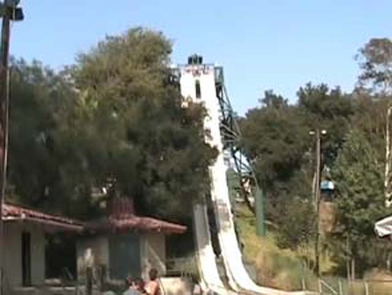
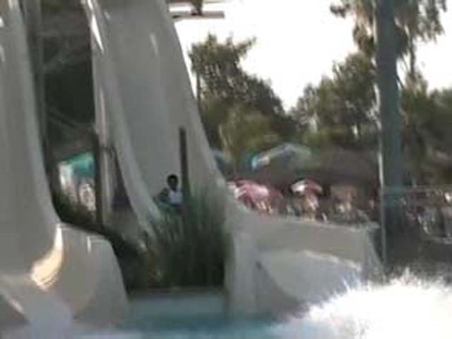
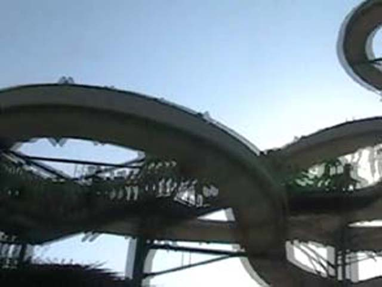
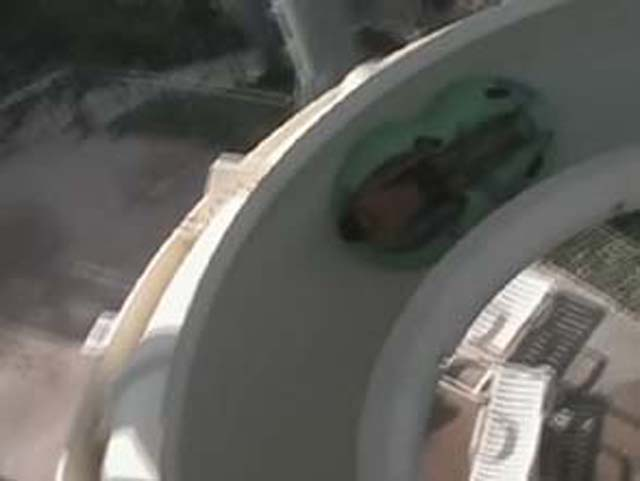

The slide snakes down the terrain. It's a pretty fun slide and it's right up there with Tiki
Falls, Malibu Run, Sea Snake and Sidewinder.

Because of long lines, I was not able to ride Dropout. It looked fun though.
I've been waiting to see what was better. Tornado at SFHH or this.
Turns out Tornado was better. We got stuck and to give ourselves a push
in the bowl. At least Raging Waters made it the bowl look mysterious.
This waterdrop appears to be the Raging Waters mascot.

Now back to High Extreme. While it LOOKS really cool, It SUCKED!!!!!!!!!!
It 's basically a Supersized Surf Rider Rapids from SCPS. So it's a real shock that the ride is THAT BAD!!!!

On the positive side, the line moved very fast. See the long quene in the picture, It only took 20 min! The quene moved
VERY fast. About as fast as California Screamin!
If you're a fatass, you can't ride High Extreme. No wonder it sucks!
The Masters of the Sky show was a hit at Raging Waters.
One thing that was unique about Raging Waters is the lilypads. It turns out that they are very cool and fun.
Hey look Soak Citys! Raging Waters decorated their Water bucket! Why
don't you do the same!
Vortex. It looks like its going to pull alot of gs, but it barley pulls
any Gs.
Berduma Triangle. A Reptile Ridge clone. It was fun as usual.

I was REALLY looking foreward to this.
Well, Raging Waters was overrated, but still BY FAR the best waterpark I've been to. All the stuff I was looking foreward to was Overrated. (High Extreme, Dragons Den, Dropout, Neptunes Fury), But the small stuff was really cool! (Lilypads, River Chute, Thunder River) I do recoomed this waterpark if you're in Southern California!